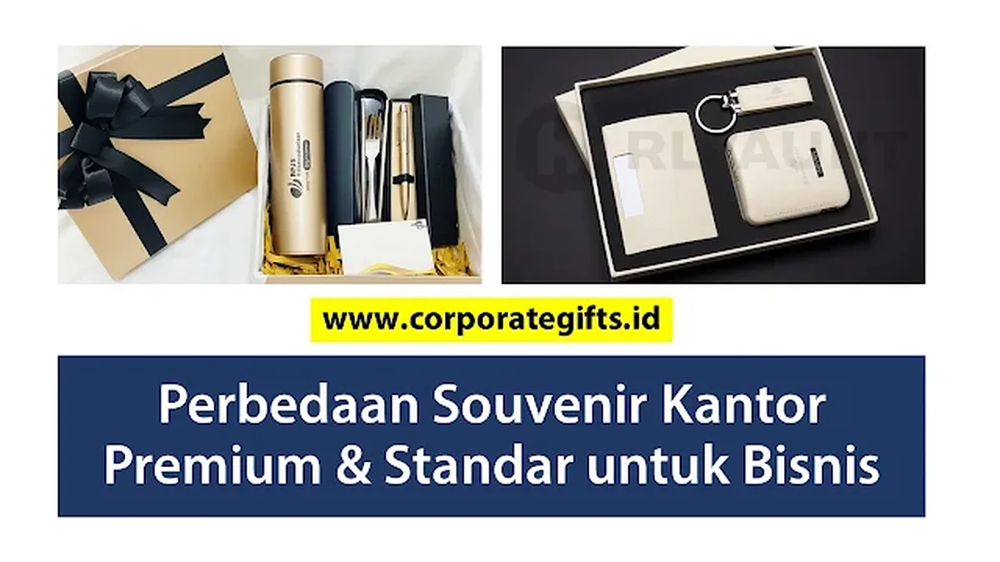

Corporate Gifts ID - Souvenir kantor premium adalah hadiah eksklusif berbahan berkualitas tinggi, diproduksi dalam jumlah terbatas, dan biasanya diberikan kepada klien VIP, mitra strategis, atau karyawan berprestasi sebagai bentuk apresiasi tertinggi. Sementara itu, souvenir kantor standar adalah hadiah ekonomis fungsional yang diproduksi secara massal untuk memperkenalkan brand kepada audiens yang lebih luas, seperti peserta seminar, pameran industri, atau pelanggan umum.
Souvenir kantor tidak hanya sekadar hadiah fisik pelengkap acara, melainkan instrumen vital yang mencerminkan identitas, standar mutu, dan profesionalisme perusahaan. Pemilihan yang tepat melalui katalog produk CorporateGifts.ID terbukti mampu meningkatkan citra positif sekaligus memperkuat loyalitas kemitraan jangka panjang.
Poin Kunci Perbedaan Souvenir Premium vs Standar:
- Souvenir Premium: Mengutamakan material berkualitas tinggi (kulit sintetis grade A, stainless 304, metal) dalam kuantitas selektif untuk klien VIP demi membangun loyalitas emosional.
- Souvenir Standar: Mengutamakan efisiensi biaya per unit, kepraktisan pemakaian harian, dan jangkauan audiens promosi skala massal.
- Strategi Segmentasi: Mengombinasikan kedua jenis cinderamata secara bertingkat (tiered gifting) memaksimalkan efektivitas anggaran promosi tahunan perusahaan.
Apa yang Dimaksud Souvenir Kantor Premium?
Souvenir kantor premium adalah cinderamata korporat eksklusif yang dirancang secara khusus untuk menghadirkan kesan mewah, elegan, dan bernilai guna tinggi. Pada umumnya, paket merchandise ini diserahkan langsung kepada klien strategis, pemegang saham, mitra kerja VIP, maupun jajaran direksi dalam forum-forum resmi.
Ciri khas souvenir kantor premium:
- Desain Eksklusif dan Berkelas: Tampil lebih elegan dengan finishing presisi, packaging hardbox beludru atau magnetik, serta kustomisasi personal nama penerima.
- Bahan Baku Berkualitas Tinggi: Memakai material pilihan seperti kulit asli/sintetis premium, logam tahan karat, kaca kristal, atau material ramah lingkungan bersertifikasi.
- Jumlah Produksi Terbatas: Dipesan dalam jumlah yang relatif terbatas guna mempertahankan prestise dan eksklusivitas.
- Memperkuat Citra Korporat Profesional: Memberikan sinyal kuat bahwa perusahaan Anda sangat menjunjung tinggi mutu dan perhatian terhadap detail.
Contoh produk kategori premium meliputi: pena metal eksklusif berukir laser nama pejabat, gift set hardbox kulit, plakat kristal 3D, atau smart tumbler custom stainless SUS 304 dengan sensor temperatur LED digital.

Kombinasi paket gift set premium dalam kotak pita eksklusif dibandingkan dengan set souvenir promosi standar.
Apa yang Dimaksud Souvenir Kantor Standar?
Souvenir kantor standar adalah cinderamata fungsional yang diproduksi dalam jumlah besar dengan struktur harga ekonomis. Tujuan utamanya adalah sebagai media promosi gerilya guna memperkenalkan merek dagang (brand awareness) kepada khalayak ramai.
Ciri khas souvenir kantor standar:
- Desain Universal dan Populer: Memanfaatkan model produk yang sudah umum di pasaran dengan penambahan sablon logo atau slogan korporat.
- Material Ekonomis dan Ringan: Dibuat dari bahan plastik polimer, kain spunbond/blacu, aluminium ringan, atau kertas daur ulang.
- Kuantitas Pesanan Skala Besar: Sangat fleksibel dibagikan kepada ratusan hingga ribuan orang dalam agenda pameran dagang (expo), sosialisasi, atau seminar.
- Fokus pada Paparan Merek Luas: Menonjolkan logo visual berukuran kontras agar mudah dikenali oleh publik.
Contoh produk kategori standar mencakup: tote bag kanvas atau spunbond, pulpen plastik promosi, gantungan kunci akrilik, mug keramik sablon, dan kalender meja tahunan.
Tabel Perbandingan Souvenir Kantor Premium vs Standar
Untuk mempermudah tim pengadaan (procurement) menentukan pilihan yang tepat, berikut ringkasan matriks komparasi teknis di antara keduanya:
| Aspek Perbandingan | Souvenir Kantor Premium | Souvenir Kantor Standar |
|---|---|---|
| Tujuan Utama | Apresiasi khusus & menjaga loyalitas jangka panjang | Promosi massal & memperluas brand awareness |
| Target Audiens | Klien VIP, mitra strategis B2B, karyawan berprestasi | Peserta seminar, pelanggan umum, publik pameran |
| Nilai Emosional | Tinggi, personal, eksklusif, dan berkesan mendalam | Rendah hingga sedang, fungsional praktis harian |
| Persepsi Brand | Profesional, prestisius, peduli pada kualitas dan detail | Aktif, dinamis, mudah diakses (friendly), dan merakyat |
| Biaya Produksi per Unit | Menengah ke atas (Rp150.000 - Rp850.000+) | Sangat ekonomis (Rp15.000 - Rp75.000) |
| Kesan Jangka Panjang | Membangun citra kemewahan dan reputasi korporat kokoh | Menciptakan paparan ingatan (recall) dalam waktu singkat |
Kapan Perusahaan Harus Memilih Souvenir Premium?
Investasi pada corporate gifts premium menjadi langkah yang paling efektif pada momentum-momentum berikut:
- Menjaga Hubungan dengan Klien Strategis: Memberikan cinderamata bernilai tinggi pada momen akhir tahun atau penutupan kontrak tahunan menunjukkan penghargaan yang tulus.
- Perayaan Momen Bersejarah Perusahaan: Ulang tahun korporat (company anniversary), pencapaian target penjualan tahunan, atau seremoni merger bisnis.
- Event Formal dengan Tamu VIP: Pertemuan pemegang saham (RUPS), forum bilateral, penandatanganan kerja sama (MoU), dan gala dinner eksekutif.
- Program Penghargaan Karyawan Teladan: Pemberian hadiah purnabakti (pensiun), penghargaan loyalitas masa kerja (years of service), atau apresiasi divisi berprestasi.
Kapan Souvenir Standar Lebih Tepat Digunakan?
Sebaliknya, souvenir promosi standar menjadi opsi paling tepat dan hemat anggaran untuk skenario:
- Event Edukasi dan Pelatihan Skala Besar: Seminar nasional, workshop mahasiswa, rapat pleno massal, dan kegiatan orientasi pegawai baru.
- Pameran Dagang dan Expo B2B: Media penarik pengunjung ke *booth* pameran agar bersedia bertukar kontak bisnis atau mengunduh aplikasi perusahaan.
- Kampanye Pemasaran Terpadu: Distribusi merchandise berhadiah untuk mendongkrak aktivasi penjualan produk ritel baru.
- Program CSR dan Kegiatan Sosial: Pembagian perlengkapan fungsional saat bakti sosial atau kegiatan sponsor komunitas.
Tips Memilih Antara Souvenir Premium dan Standar
Agar strategi pengadaan cinderamata korporat Anda memberikan dampak (return on investment) yang maksimal, terapkan 5 panduan praktis berikut:
- Kenali Karakteristik Audiens Penerima: Bedakan kebutuhan dan ekspektasi antara jajaran komisaris dengan peserta seminar publik.
- Tetapkan Tujuan Akhir Program Gifting: Tentukan apakah metrik utama keberhasilan adalah loyalitas klien atau volume jangkauan audiens promosi.
- Terapkan Struktur Anggaran Bertingkat: Jangan memaksakan produk premium untuk semua peserta; alokasikan 70% budget untuk segmen VIP dan 30% untuk merchandise umum.
- Pertahankan Keselarasan Identitas Visual: Pastikan warna material, penempatan logo, dan tipografi selaras dengan pedoman *brand guideline* perusahaan Anda.
- Pilih Vendor Pengadaan Berpengalaman: Pastikan vendor memiliki rekam jejak produksi terpercaya, jaminan sampel *proofing* fisik, dan layanan pengiriman tepat waktu seperti di portofolio CorporateGifts.ID.
Kesimpulan: Mengoptimalkan Program Gifting Korporat
Memilih antara souvenir kantor premium atau standar bukanlah tentang mana yang lebih unggul, melainkan produk mana yang paling selaras dengan strategi pemasaran dan alokasi anggaran perusahaan Anda.
Dengan mengombinasikan souvenir premium untuk mengikat loyalitas pemangku kepentingan kunci dan souvenir standar untuk memperluas eksposur brand, perusahaan Anda dapat menciptakan dampak reputasi yang kuat dan berkesinambungan. Tim konsultan layanan kustomisasi CorporateGifts.ID siap membantu merancang paket cinderamata terbaik sesuai kebutuhan spesifik instansi Anda.
Pertanyaan Seputar Souvenir Kantor Premium dan Standar (FAQ)
Disclaimer: Estimasi biaya dan spesifikasi item souvenir kantor dalam panduan ini dapat disesuaikan secara fleksibel dengan alokasi anggaran perusahaan Anda melalui tim konsultan resmi CorporateGifts.ID.